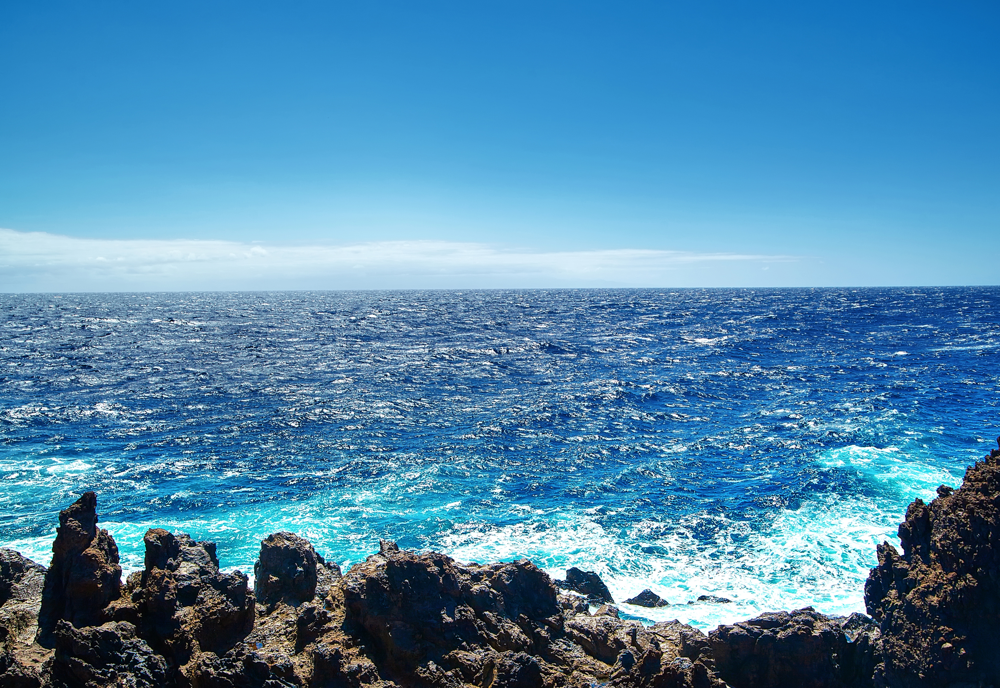

Journalジャーナル
Quiet Notes静かな記録
A hidden corner of My Miyakojima for slower reflections on season, community, and the feeling of living with the island.
季節、地域、そして島とともに暮らす感覚をゆっくり記録する、My Miyakojimaの静かな場所です。
This space is a quiet documentation of life in Miyakojima. Not a travel guide. Not a checklist. Just reflections on culture, community, and the rhythm of island life.

June 2026 - The Feeling That Stays 心に残る島の空気
A quiet reflection on what makes Miyakojima special: not only the blue sea, but the people, respect, elders, and island feeling that stay with you.
Read More → 詳しく読む
May 2026 — Golden Week Energy ゴールデンウィークのにぎわい
The island fills with movement — busy streets, full restaurants, and the quiet effort of people keeping everything alive.
Read More → 詳しく読む
April 2026 – The Space Between Seasons 季節のあいだにある時間
A quiet transition in Miyakojima — where seasons shift, families adjust, and the island slowly comes alive again.
Read More → 詳しく読む
March 2026 — The Shape of Winter2026年3月 ― 冬のかたち
There is no snow here. Winter arrives differently on this island — through wind, darker seas, and quieter shores.
Read More → 詳しく読む
February 2026 — Living in Miyakojima2026年2月 ― 宮古島に暮らすということ
A reflection on what life on the island truly feels like beyond the beaches.
Read More → 詳しく読むジャーナル
この場所は、宮古島での暮らしを静かに記録していく空間です。 観光ガイドでもなく、チェックリストでもありません。 文化や地域、そして島のリズムについての小さな記録です。